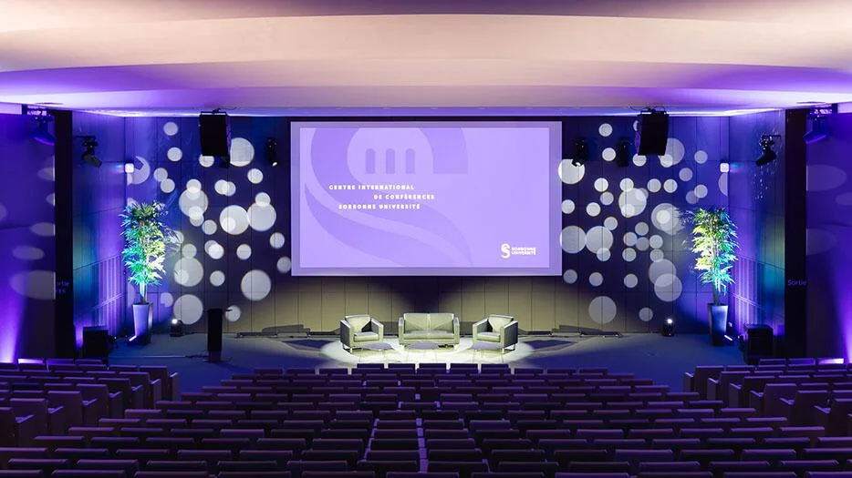
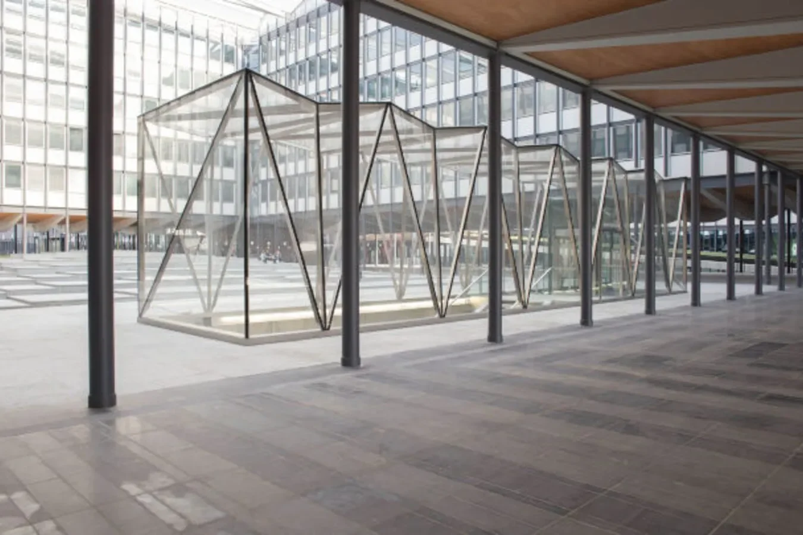
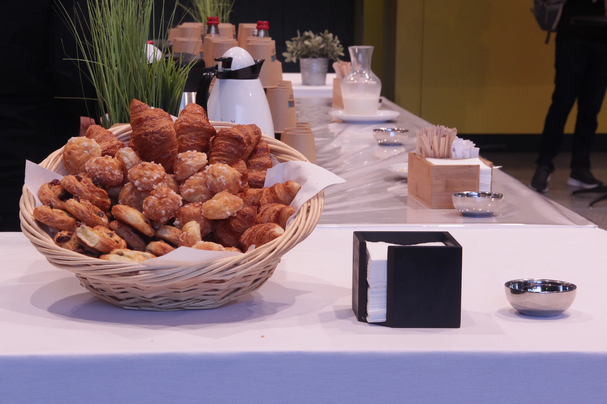
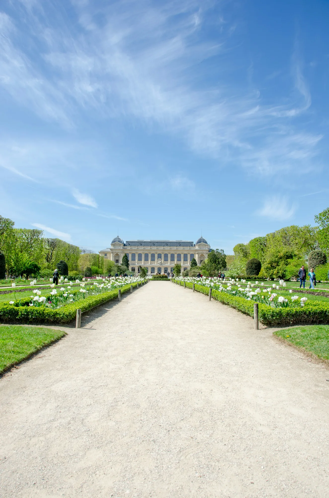
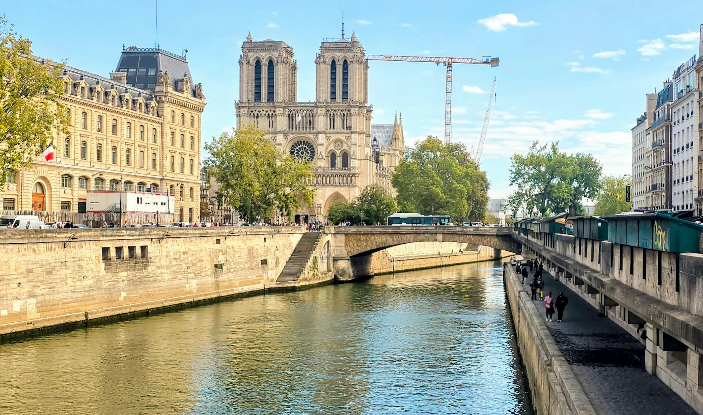

The Centre International de Conférences de Sorbonne Université occupies the centre of the Jussieu campus — the main science campus of Sorbonne Université in the 5th arrondissement.
The venue offers a main auditorium seating several hundred, dedicated breakout rooms for community tracks and workshops, and open spaces for networking. Modern AV infrastructure throughout, with full accessibility.
November is a great time to be in Paris. The summer crowds are gone, the cultural calendar is full, and the city is easier to move around. Temperatures are mild, and rain adds a sparkly touch to cobblestones and cozy cafés.
The 5th arrondissement is the Latin Quarter, one of Europe's oldest seats of learning, and today with one of the densest concentrations of universities, laboratories, and research institutes on the continent. Notre-Dame, the Panthéon, the Jardin des Plantes, and the Institut du Monde Arabe are all within walking distance. The Seine is two minutes on foot.


Photos by Nadine Marfurt, Kreshen, and Is@ Chessyca on Unsplash.
CDG airport connects via RER B in about 1 hour. Orly via Métro lines 14 in 30 minutes.
By train: London in 2h15, Brussels in 1h22, Amsterdam in 3h20, Frankfurt in 4 hours.
Trains also run from Munich, Berlin and Barcelona. There is no excuse not to come!
The CICSU is fully wheelchair accessible. All conference spaces, restrooms, and entrances are step-free. For questions or additional accommodations, please contact us.